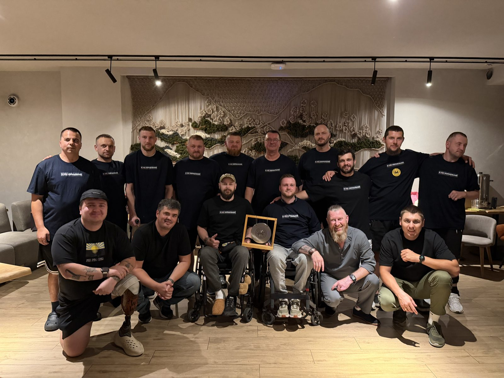
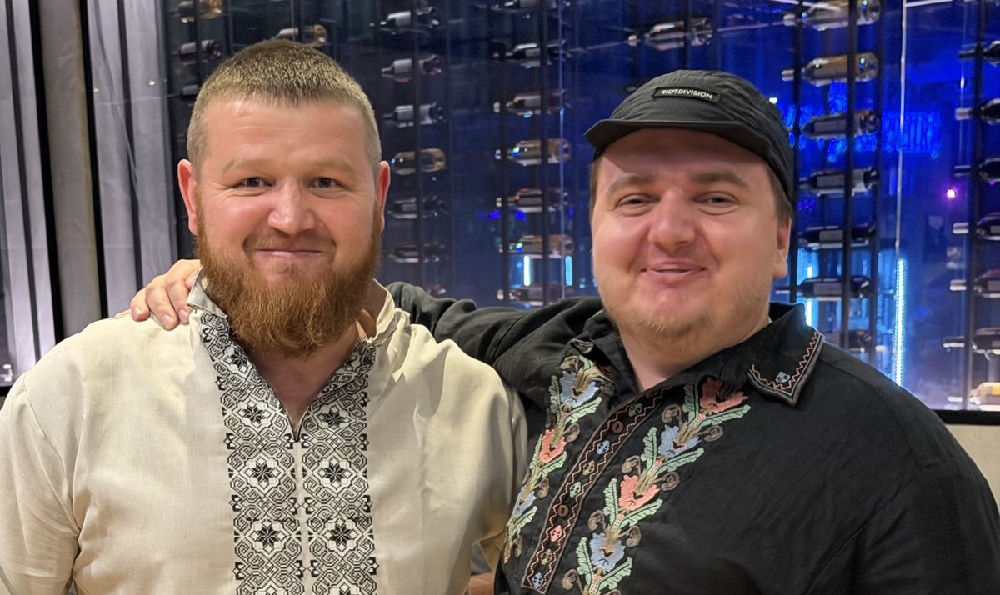
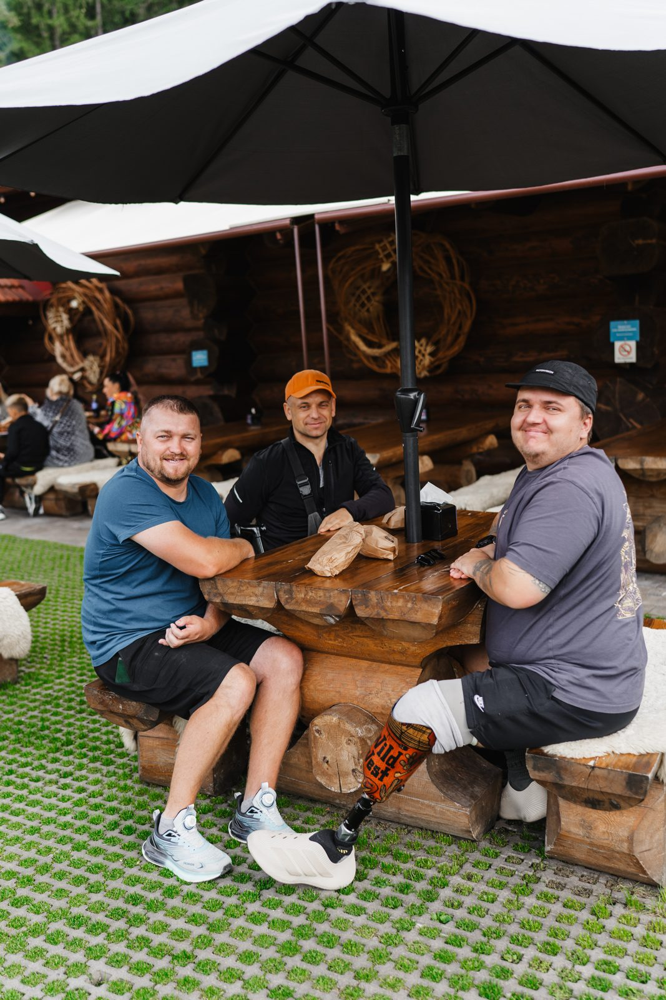
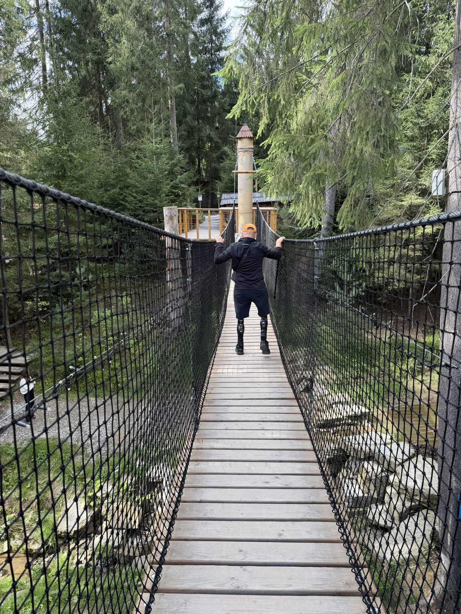
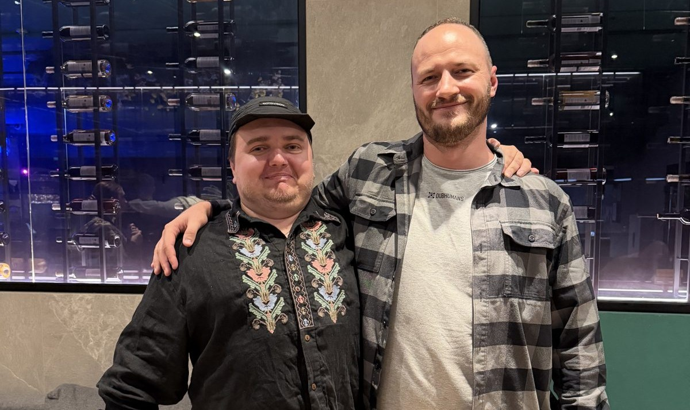
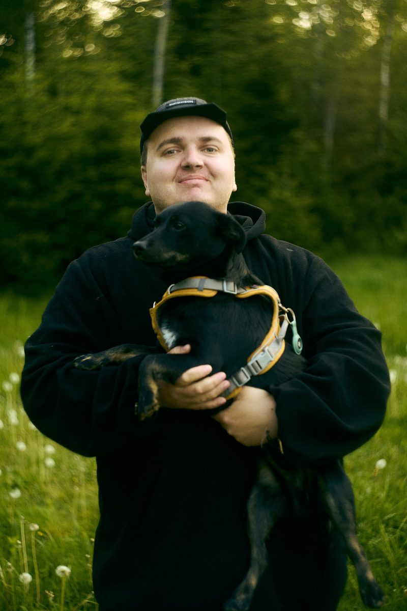

Вітаю друзі, останні новини служіння! 👋
Цього місяця Бог знову дав мені зустрічі з людьми, після яких хочеться просто мовчати й дякувати. Новий випуск подкасту «Без броні» і ретрит у Буковелі — про них і про кількох героїв, чиї історії я ношу в серці.

Ці футболки ми подарували хлопцям від команди. Перекреслене «не» нагадує: попри досвід війни й поранення, ти — нормальна, повноцінна частина суспільства.
«Без броні»: Михайло

«Ніхто більшої любови не має над ту, як хто свою душу поклав би за друзів своїх»
— Івана 15:13
Нарешті вийшов новий випуск «Без броні». Нашим гостем був Михайло, військовий медик, який прослужив 11 років. Він людина стримана й скромна, не з тих, хто розповідає про себе з емоціями. Але ще до запису, в особистій розмові, він поділився історіями, які нас із Надею глибоко вразили. І під час випуску розповів чимало.
Найбільше мене вразили його вірність Богу, спокій і ясне розуміння, як рухатися далі. Слава Богу за таких людей, які стояли поруч зі збереженням нашої країни.
Сьогодні Михайло й далі допомагає військовим, тепер уже як цивільний і як служитель у церкві: організовує групи, спілкується з хлопцями, а також вкладається у свою сім'ю.
Дивитися випускРетрит у Буковелі

Цей ретрит був неймовірним часом із чудовими людьми. Більшість учасників цього разу були з Полісся та Волині, а це мій регіон, тож ці люди були ще ближчими до серця.
Було багато щирих особистих розмов. Я хотів би розповісти про кожного, бо це справжні герої, але на це знадобився б окремий довгий лист. Тож поділюся історіями двох.
Історія Андрія

Я з Андрієм і Назаром у Буковелі.
Не здався«Ми звідусіль утиснені, та не пригнічені; ми в скрутних обставинах, але не впадаємо в розпач; переслідувані, але не покинені; повалені, але не погублені»
— 2 Коринтян 4:8–9
Андрій родом з Рівненщини, тож для мене він ніби земляк. Він подорожував Європою, працював на будівництві, мав досвід зведення різних будівель, мав сім'ю й дітей. Коли почалося повномасштабне вторгнення, він повернувся з родиною в Україну. Одного дня, коли йшов у магазин, його зупинили на вулиці й мобілізували. Андрій був відкритий до цього, тож долучився без вагань.
Він провів на службі чимало часу, а під час виконання завдання отримав важкі поранення і черепно-мозкову травму. Ліва сторона тіла досі не працює як слід. Але Андрій не здався: госпіталі, реабілітації, довгий шлях відновлення.
Я думав, що це найважче, що йому довелося пережити. Але він поділився ще складнішим: саме в час відновлення дружина сказала, що не погоджувалася на таке життя, і подала на розлучення. Андрій каже, що всі чекали, що він повернеться до батьків і зіп'ється. Але він обрав інший шлях і продовжив боротися за себе.
Сьогодні Андрій рухається вже значно краще, бере участь у різних активностях і продовжує цю довгу боротьбу.
Історія Назара

Назар з подвійною високою ампутацією сам переходить підвісний міст.
20 годин під завалами«До Господа кликав я в утиску своїм, і Він озвався до мене!»
— Псалом 120:1
Назар — скромний, світлий чоловік, як виявилося, греко-католик. До війни працював машиністом тепловоза, а згодом був мобілізований, залишивши вдома дружину з дитиною. На службі він регулярно читав Біблію і вірить, що вцілів саме завдяки Богові, хоч і втратив кінцівки.
Назар був у п'ятиповерхівці, коли в неї влучила ракета, і його накрило стіною. Коли він прийшов до тями, зрозумів, що обидві ноги придавлені вище колін. Він намагався хоч трохи розчистити простір навколо і знайшов дві пляшки води. Саме вони врятували йому життя: Назар пролежав під завалами 20 годин, і лікарі потім сказали, що без тієї води він помер би від зневоднення.
Я запитав, що було в його голові ці 20 годин: прифронтове місто, завали, і невідомо, чи тебе взагалі знайдуть. Назар відповів просто: «Я молився». Це тримало його.
Сьогодні в Назара хороші протези, у сім'ї народилася ще одна дитина. Він будує своє життя, піклується про родину, працює над тривожним розладом і вже має в цьому успіхи.
Далі буде...

З ще одним Андрієм ми разом уже довгий час.
Поки я готував цей лист, я вже був на наступному ретриті, серед нових людей і нових історій. Про них розповім у наступному листі.
Там був і ще один Андрій (на фото зі мною). Ми підтримуємо стосунки вже довгий час: зустрічаємося, я кличу його на різні події. Про нього теж розповім наступного разу.
А поки прошу молитися за хлопців, які там були: щоб розмови й посіяне не залишилися тільки спогадом.
Нові кроки: Цільові мережі дії
Цього місяця я долучився до нової ініціативи — Цільових мереж дії. Її ідея проста: об'єднати служителів з різних церков і організацій навколо однієї групи людей, щоб ми не працювали кожен окремо, а доповнювали одне одного. Кожен залишається у своїй організації, але ми разом бачимо спільне поле і спільну мету.
Мене запросили стати координатором напрямку «Ветерани». Мережа тільки формується, зараз ми знайомимося й шукаємо, як найкраще діяти разом. Для мене це природне продовження того, що я вже роблю: допомогти, щоб ветерани, яких ми зустрічаємо, могли знайти віру, спільноту й підтримку ближче до дому.
Стати партнером
Моя команда підтримки ще не зібрана повністю. Ваша підтримка дає змогу бути поруч із хлопцями: на ретритах, у розмовах, у довгих стосунках.
Молитовні потреби
- • За Михайла — сили й мудрості в служінні військовим у церкві та в його сім'ї.
- • За Андрія — подальше відновлення тіла, зцілення серця, добрих людей поруч і зустрічі з Богом.
- • За Назара — мир і звільнення від тривоги, благословення для його сім'ї та новонародженої дитини.
- • За учасників ретриту — щоб посіяне в Буковелі проросло.
- • За учасників останнього ретриту — щоб Бог продовжив роботу в їхніх серцях після повернення додому.
- • За мережу «Ветерани» — мудрості у формуванні команди й добрих партнерів з різних церков та організацій.
- • За нових партнерів — щоб Бог привів людей, які захочуть стати частиною цієї роботи молитвою та фінансово.
Я щиро вдячний, що ви поруч у цьому служінні. Ваша присутність відчувається навіть на відстані!
«А ті, хто надіється на Господа, наберуться нової сили, крила підіймуть, немов ті орли, будуть бігати й не потомляться, будуть ходити й не зморяться!»
— Ісая 40:31
Олександр Килюшик
З благословенням у Христі
Служіння серед військових · Місія «Україна для Христа»